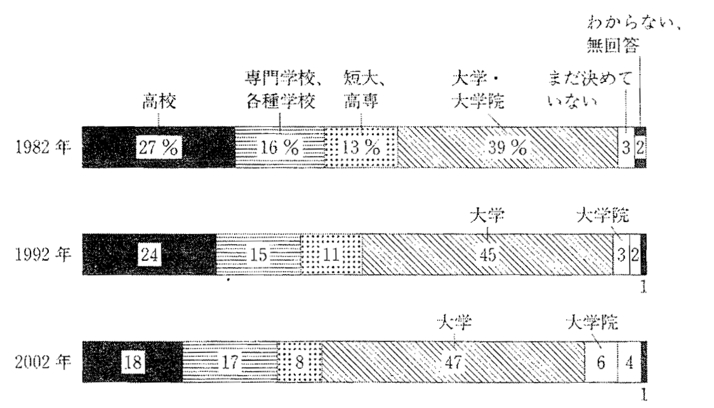

（1）
隅
Answer key unavailable; this question is not graded.
この話をする前に、「時間というものは作ることができない」という、あたり前のことを言っておきたい。1日が24時間であることを変えることはできない。
睡眠時間を削ればいいと言う人もいるだろう。必要な睡眠時間は個人差があるうえに、無理をすると苦痛も大きい。楽しいことをするために睡眠時間を削るのはそれほど苦にならないものだけれども、勉強のために睡眠時間を削るなど、なかなかできるものではない。
では、どうすれば時間ができるのか。おおむね（注1）二つの方法がある。
ひとつは、自分にとっての「ムダな時間を減らす」ことだ。大学に受かるための時間が必要ならば、それに関係のない時間を減らせばいい。これは必ずしも、食事や入浴の時間を削れというわけではない。あたり前のように過ごしているムダな時間をなくせばいいのだ。（中略）
1日1時間はテレビを見てもいいというような、ある程度の娯楽は許されるだろう。でも、どれもこれも十分な時間をとるのは、とうてい（注2）無理な話だ。だから、どうしても自分にとって捨てられないことや捨てられない時間を二つか三つに絞り、それ以外は削らなければならない。
時間を増やす二つ目の方法は、「時間の密度を上げる」ことである。時間の密度を上げるということは、1時間で5ページ勉強するのと10ページ勉強するのとでは、時間の密度が倍もちがうということだ。前にも言ったように、勉強をやっていないのに「できる」人は、時間的に多く勉強していないだけで、人の何倍ものスピードで十分な勉強量をこなしている（注3）はずだ。
ここで浮上してくる（注4）のが、一見（注5）ムダに見える時間の効用（注6）である。1時間だけはテレビを見る、彼女と電話で話すなど何でもいいのだが「遊び」があることで残りの2、3時間の密度がアップする（注7）なら、それはムダな時間ではなく投資（注8）の時間ということになる。
（⑤）、時間をうまく使うには、自分であれこれと試しながら、こうしたほうが能率が上がる、これは時間のムダだ、ということを知っていく必要がある。自分で試しつつ、どうやったら時間の密度を上げられるか、何がムダで何がムダでないかを判断できるようになれば、時間を増やすことができるようになる。そして、一度こういう能力を身につけておけば、一生、時間をうまく使える人になれるのである。
（和田秀樹『まじめすぎる君たちへ』講談社による）
（注1）おおむね：だいたい
（注2）とうてい：とても
（注3）勉強量をこなす：効果的にたくさん勉強する
（注4）浮上する：うかぶ
（注5）一見：ちょっと見ると
（注6）効用：役に立つところ
（注7）アップする：あがる
（注8）投資：将来の利益のためにお金や時間を使うこと
（1）「お母さん、もう少し大人になりな（注1）、お父さんくらいに」
私の背中に6歳の息子が言った。自転車の後ろに乗せ、幼稚園に向かう途中のことだった。ドキッとした。
確かに私は一日中、3人の子どもに片づけ（注2）をしなさいとか、宿題をやってしまいなさいとかうるさい。頭に来ると子どもと同等（注3）になってけんかをしている。それに比べ夫はその様子を少し離れて見ていてたまに口出し（注4）するくらいで大人なのだ。
それにしても幼稚園児（注5）の言うことにしては立派過ぎる。「大人って？」と聞いてみた。
すると、後ろから私の体に手を回して「ほら、お母さんこんなに小さいよ。もっと大人になってお父さんくらい大きくなって！」。なーんだ体の大きさのことだったんだ。
私は「大人だって小さい人はいるよ。ほら、おばあちゃんなんて大人なのにお母さんより小さいよ」と投げかけた。
「あのね、おばあちゃんはぼくが生まれる前、大人だったんだよ、でもね、今はおばあちゃんになって縮んだの」。うーんなるほど。
初めは「大人になりな」なんて言われて反省し、次はおばあちゃんを大切にしなければと考えさせられた。
幼稚園に着いた。息子は手を振り、門をくぐって（注6）行く。後ろ姿がいつもより大人びて（注7）見えた。
（上西紀子「ひととき」2001年11月3日付『朝日新聞』による）
（注1）なりな：なりなさい
（注2）片づけをする：片づける
（注3）同等：同じ程度
（注4）口出し：他の人の話に横から何か言うこと
（注5）幼稚園児：幼稚園の児童
（注6）くぐる：下を通って抜ける
（注7）大人びて：大人のように
（2）自分の気持ちを言葉にして身近な（注1）人に話しかけるとき、抽象的な表現をしても、相手には何のことかピンと来ない（注2）ことが多いはずです。言いたいことは常に具体的に。これが大切です。
どうしても伝えたいことがある。しかし、わかりやすく表現できない。そんなときは、伝えたい内容を示す具体的な例はないかな、と考えてみるのです。
（中略）
あなたに誰かが話しかけてきたと考えてください。このとき、あなたが知っている人の名前や、行ったことがある土地の名前が出てくると、思わず話に引き込まれる（注3）ことがあるはずです。聞いたこともない国の地名が出てきて、その国が抱える問題点を聞かされても、「だから、どうしたの？」と聞き返したくなるかもしれません。
会話は、相手が参加してくれてこそ成立します。だったら、相手を話題に引き込む材料が必要です。それが、具体例なのです。あるいは、お互いがよく知っている固有名詞（注4）なのです。
（池上彰『相手に「伝わる」話し方』講談社による）
（注1）身近な：自分に関係が深い
（注2）ピンと来ない：すぐには分からない
（注3）話に引き込まれる：話に興味を感じて聞く
（注4）固有名詞：人の名前や地名、会社名など
（3）国民の多くが、自分たちのいいように税金を使ってほしいと考えている。道路を作ってもらいたいとか、学校をたくさん作ってほしいとか、反対に何も作らなくていいから、その分税金を安くしてほしいとか、いろいろな意見がある。
税金は国民が払ったものである。しかし、税金が自分たちの都合がいいように使われないと言って、政府を批判するのはどうかと思われる。
税金の使い道（注）は、必ずしも国民の思いどおりにはならない。ある国民にとって都合のよい使い道であっても、国全体から見るとそうでない場合があるからである。たとえば、税金を使って、ある県に高速道路を作ったと考えてみよう。その県の人々にとっては、高速道路が作られれば生活が便利になる。観光客も増える。（②）、同じだけの税金を払っている他の遠くの県の人にとっては、その高速道路を使う機会は全くないだろう。
このように、税金を全体にバランスよく使うことは難しい。したがって、国民は自分たちの直接の利益にならないといって、単純に政府を批判するべきではない。一方で、政府もできるだけ不公平が生じないように、十分気をつけて税金を使ってもらいたいものである。
（注）使い道：お金などを使う方法、目的
（1）ふるさとや家族について、はじめて意識的に考えたのは18歳のときだった。つまり、家族と離れて、東京で一人暮らしをはじめたときである。
かなり重症（注1）のホームシック（注2）で、休みになるとすぐに帰省（注3）した。で、帰って何をするかというと、特別なことは何もない。
ふるさとは、帰ってみると、実になんでもないところである。そして、そのなんでもなさが、ふるさとの魅力なのだ、と思う。
あたりまえのことの大切さやありがたさに気づくためには、すこし離れて見るのがいい。ふるさとを離れると、ふるさとのよさが見えてくる。
（俵万智『101個目のレモン』文藝春秋による）
（注1）重症：病気が重いこと
（注2）ホームシック：ふるさとを離れている者がふるさとを恋しく思う様子
（注3）帰省：ふるさとに帰ること
（2）建物や部屋、家具などには直線が多く使われています。作りやすくむだが少ないことが、その理由です。しかし、直線には冷たい感じをあたえるという欠点もあります。
一方、曲線は、暖かい感じややわらかい感じをあたえるので、最近では、技術の進歩もあって、曲線を用いることも多くなってきました。
家でも、大きなまるいテーブルをひとつおくと、すわることのできる人の数もあまり制限をうけず、心理的にもやさしい感じをあたえます。
（家田重晴『すぐに役だつ保健シリーズ⑨健康をささえる環境』ポプラ社による）
（3）演劇でも書物でも、文化や芸術には、知らない世界に自分の身を置き換え、身近な（注1）ものにするという力がある。それは「人の身になって考えてみる」という想像力が培われる（注2）ことでもあると思う。
この想像力により、様々な差異（注3）を超え、世界の人々が同じ「人間」として、幸せに生きてほしいという願いが自然にわいてくる。実はこういう文化の力こそが平和につながる大きな力なのかもしれない。
（東美恵子「壁超える想像力」2002年11月3日付 読売新聞による）
（注1）身近な：自分に関係が深い
（注2）培う：育てる
（注3）差異：違い
（4）私は、思いきった差別教育をしようと考えている。勉強する子はほめてあげよう。怠ける子は叱ろう。よい事をしたらほめよう。悪い事をしたら叱ろう。できれば、一人一人の子を、よく観察して、なるべくたくさん良い所をみつけ出してほめてあげよう。ほめるときは、なるべくたくさんの人の前で、はっきりほめて、多くの人にも祝福して（注）もらおう。叱る場合は人の知らないところで、静かに叱られる理由がよくわかって反省してもらえるように叱ろう。
（中島司有『書のこころ』講談社による）
（注）祝福する：幸せを祈ったり、祝ったりすること
（5）下のグラフは、「進学の最終目標をどこまでと考えているか」という質問に対する日本の高校生の答えを、1982年から2002年まで10年ごとにまとめたものである。なお、1982年の調査では大学と大学院を分けなかったが、1992年と2002年の調査では分けて聞いた。

（NHK放送文化研究所編『放送研究と調査』2002年12月号 日本放送出版協会による）
Cases & principal differences →